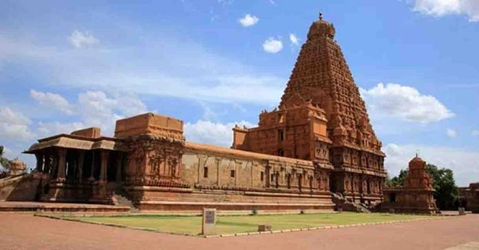
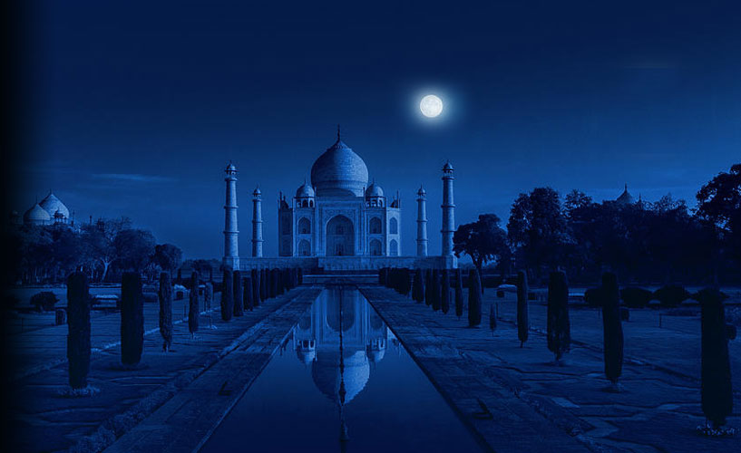
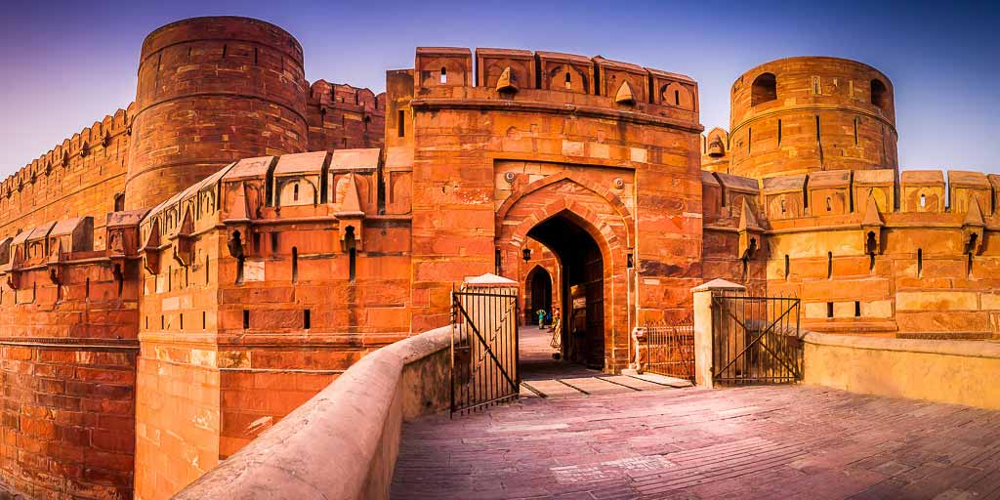
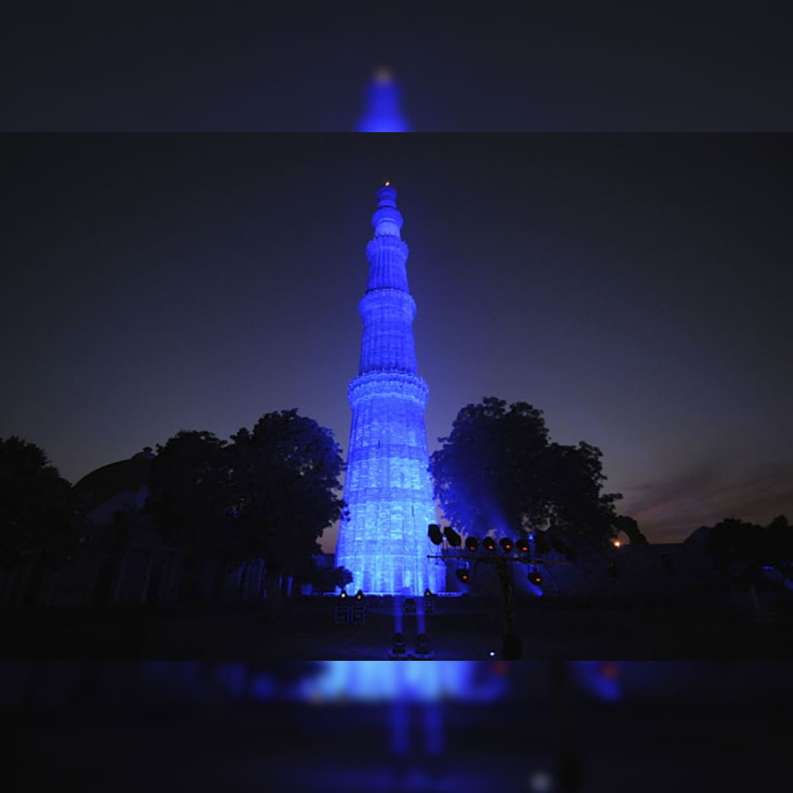

Fascinating places of India
Fascinating places of India
The great VELLORE SEPOY MUTINY 1857

According to tradition Vellore Fort in Tamil Nadu was built between 1274 and 1283 by Sinna Bommi Reddi.
Historic Vellore Fort, Government Museum, Science Park, Vainu Bappu Observatory, Amirthi Zoological Park, Religious Places like Jalakandeswarar Temple, Srilakshmi Golden Temple, Big Mosque & St. John's Church and Yelagiri Hill station are the among top tourist attractions in and around Vellore.
Vellore fort has five important Mahals. They areHyder Mahal Tippu Mahal, Begam Mahal, Candy Mahal, Badhusha Mahal.
The Pride Of Tamil Nation

The temple has a massive colonnaded prakara (corridor) and one of the largest Shiva lingas in India. It is also famed for the quality of its sculpture, as well as being the location that commissioned the brass Nataraja – Shiva as the lord of dance, in 11th century.
The temple has the world's tallest vimanam (temple tower) and its Kumbam (the structure on the top) weighs approximately 80 tons. The temple has a huge statue of Nandi (sacred bull) at the entrance. The statue is carved out of a single rock and weighs around 20 tons. The Lingam inside the temple is 3.7 meters tall.
Symbol of LoveTAJ MAHAL

It is a masterpiece of architectural style in conception, treatment and execution and has unique aesthetic qualities in balance, symmetry and harmonious blending of various elements. Integrity is maintained in the intactness of tomb, mosque, guest house, main gate and the whole Taj Mahal complex.
The Taj Mahal was built by the Mughal emperor Shah Jahān (reigned 1628–58) to immortalize his wife Mumtaz Mahal (“Chosen One of the Palace”), who died in childbirth in 1631, having been the emperor's inseparable companion since their marriage in 1612
Grand Agra Fort

Built by Mughal emperor Akbar in 1565 AD, Agra Fort is a majestic sandstone built as an ode to the magnificence of the Mughal empire. Encompassing within its 2.5-km-long enclosure walls a stunning imperial city, the fortress is shaped like a crescent, its eastern wall flanked by River Yamuna.
The fort was invaded and captured by the Maratha Empire in the early 18th century. Thereafter, it changed hands between the Marathas and their foes many times. After their catastrophic defeat at Third Battle of Panipat by Ahmad Shah Abdali in 1761, Marathas remained out of the region for the next decade.
Victory Tower Qutb Minar

Qutab-ud-din Aibak, the first Muslim ruler of Delhi, commenced the construction of the Qutab Minar in 1200 AD, but could only finish the basement. His successor, Iltutmush, added three more storeys, and in 1368, Firoz Shah Tughlak constructed the fifth and the last storey.
The tower was built to celebrate Muslim dominance in Delhi after the defeat of Delhi's last Hindu ruler